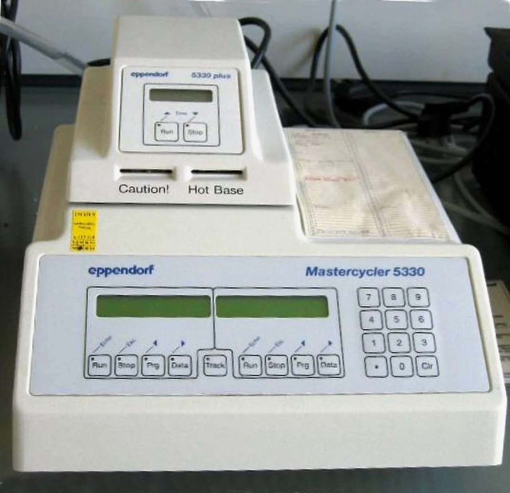
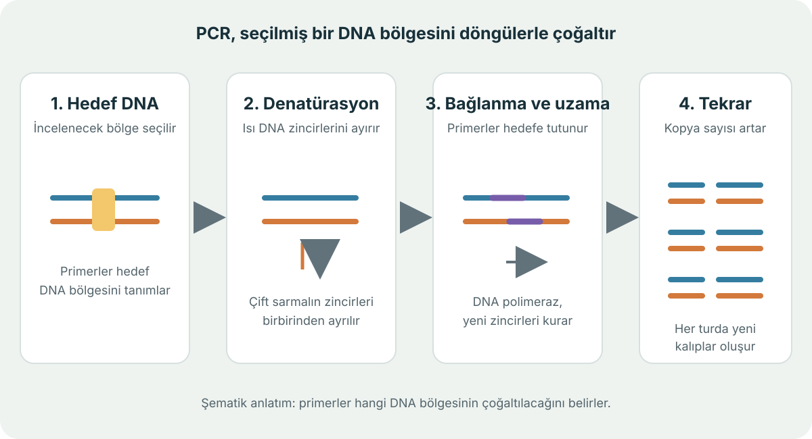
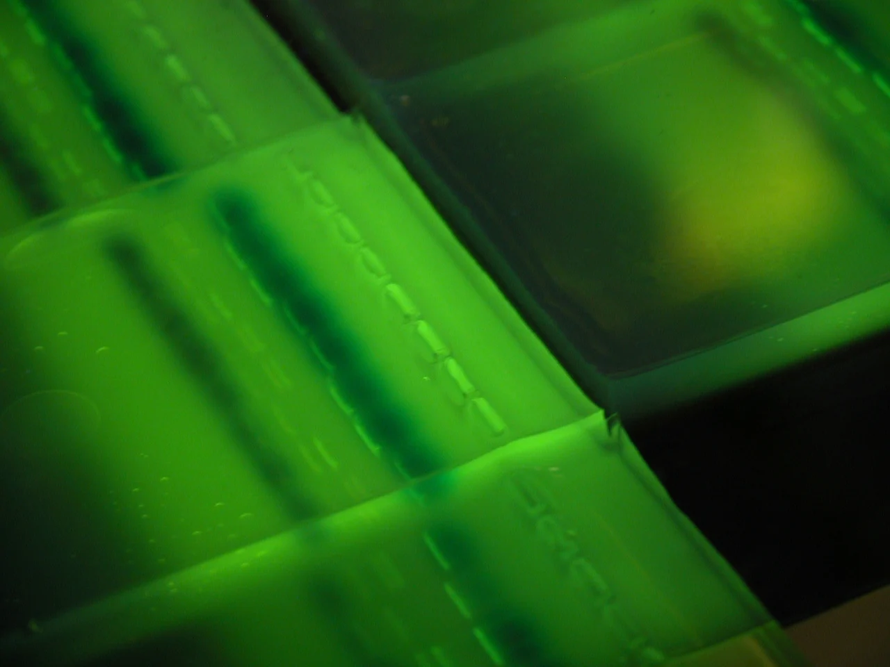

PCR, belirli bir DNA parçasını laboratuvarda çoğaltma yöntemidir. Açılımı “polimeraz zincir reaksiyonu” olan teknik, başlangıçta örnekte çok az bulunan bir DNA bölgesinden analiz edilebilecek kadar kopya üretmeyi sağlar. PCR bütün DNA'yı rastgele çoğaltmaz: Hangi bölgenin hedefleneceğini kısa DNA parçaları olan primerler belirler. Bu nedenle yöntem, tıbbi testlerden genetik araştırmalara ve adli incelemelere kadar farklı alanlarda kullanılır.[1]
PCR tam olarak ne yapıyor?
Bir DNA örneğini, içinde aradığımız kısa bir paragrafın bulunduğu çok uzun bir kitap gibi düşünebiliriz. PCR, bu kitabın tamamını değil, primerlerin işaret ettiği bölümü çoğaltır. Karışımdaki DNA polimeraz enzimi, var olan DNA zincirlerini kalıp olarak kullanır ve yeni zincirler kurar. Yeni kopyalar da sonraki döngülerde kalıp hâline gelebilir. Böylece hedef DNA parçasının miktarı artar.[1]
Bir PCR karışımında genellikle hedefi içeren DNA örneği, iki primer, DNA polimeraz, DNA'nın yapı taşları olan nükleotitler ve enzimin çalışmasını sağlayan uygun bir tampon bulunur. Karışımın sıcaklığını programlı biçimde değiştirip sabit tutan cihaza termal döngü cihazı denir. Kullanılan enzim ve sıcaklıklar yönteme göre değişebilir; yaygın örneklerden Taq polimeraz, ısıya dayanıklı bir DNA polimerazdır.
PCR nasıl çalışır? Üç aşama, tekrar eden bir döngü
Termal döngü cihazı sıcaklığı sırayla değiştirir. Her döngüde hedef DNA zincirleri ayrılır, primerler hedef bölgeye tutunur ve polimeraz yeni DNA zincirlerini uzatır. Bu üç aşama birçok kez tekrarlandığında hedef parçanın kopya sayısı artar.[2]

İdeal koşullarda her döngü hedef DNA miktarını yaklaşık iki katına çıkarabilir; örneğin 30 döngü, teorik olarak 230 kopya artışı demektir. Gerçek reaksiyonlar bu ideal hesaba tam uymaz: Reaktifler azalabilir, ürünler birikebilir ve çoğalma zamanla yavaşlayabilir. Bu yüzden “PCR her koşulda tam olarak milyarlarca kopya üretir” demek doğru olmaz; sonuç, örnek ve kullanılan testin performansına bağlıdır.
PCR, RT-PCR ve qPCR aynı şey mi?
Bu kısaltmalar birbirine benzediği için sıkça karıştırılır. Temel PCR DNA'yı çoğaltır; RNA'yı doğrudan kalıp olarak kullanmaz. Ancak RNA'nın incelenmesi de mümkündür: Önce RNA, ters transkriptaz enzimiyle tamamlayıcı DNA'ya (cDNA) çevrilir, ardından PCR uygulanır.
DNA'yı çoğaltır. Döngüler tamamlandıktan sonra ürün, örneğin jel elektroforeziyle incelenebilir.
Buradaki “RT”, ters transkripsiyonu anlatır: RNA önce cDNA'ya çevrilir, sonra bu DNA çoğaltılır.
qPCR, çoğalmayı floresan sinyalle döngüler sırasında izleyip miktar hakkında ölçüm yapar. RT-qPCR, RNA'yı cDNA'ya çevirme adımını da içerir.

Bu nedenle RT-PCR ile gerçek zamanlı PCR aynı terim değildir; günlük kullanımda ikisinin kısaltmaları karışabilir. Bir testin adında “RT-PCR” yazması, hangi adımların ve ölçüm biçiminin kullanıldığını tek başına açıklamayabilir. Testin yöntem bilgisine bakmak gerekir.[2]
PCR hangi alanlarda kullanılır?
- Enfeksiyonların tanısına yardımcı testler: Bir örnekte belirli bir bakteri veya virüse ait genetik hedef aranabilir. RNA taşıyan virüslerin hedefleri için ters transkripsiyon içeren yöntemler kullanılabilir. COVID-19 testlerinde PCR, nükleik asit çoğaltma testleri (NAAT) ailesindeki yöntemlerden biridir.[3]
- Genetik incelemeler: Belirli DNA bölgeleri, kalıtsal hastalıklarla ilişkili varyantlar veya genetik belirteçler üzerinde çalışmak için çoğaltılabilir. Hangi varyantın inceleneceği teste göre belirlenir; PCR tek başına bütün genetik hastalıkları taramaz.
- Araştırma ve biyoteknoloji: DNA parçalarını analiz, klonlama veya dizileme öncesinde çoğaltmak; gen ifadesini RT-qPCR ile incelemek gibi amaçlara hizmet eder.
- Adli bilimler ve kimlik incelemeleri: Çok az miktarda biyolojik örnekteki seçilmiş DNA belirteçleri çoğaltılarak karşılaştırma yapılabilir. Sonuçların anlamı örneğin kalitesine, yönteme ve uygun karşılaştırma kurallarına bağlıdır.
- Gıda, tarım ve çevre araştırmaları: Gıdalardaki belirli mikroorganizmalar veya genetik diziler araştırılabilir; bitki ve hayvan örneklerinden elde edilen DNA da ekolojik ve biyolojik çalışmalarda incelenebilir.
PCR sonucu ne söyler, ne söylemez?
PCR'nin gücü, az miktardaki hedef DNA'yı saptanabilir hâle getirebilmesidir; hassasiyeti aynı zamanda dikkatli örnek alma ve kontaminasyonu önlemeyi de önemli kılar. İstenmeyen DNA'nın örneğe karışması yanlış pozitif sonuca yol açabilir. Örnekte hedef materyal çok azsa, örnek uygun yerden veya zamanda alınmamışsa ya da reaksiyonu etkileyen başka etkenler varsa hedef saptanmayabilir. Kullanılan primerlerin hedef diziyi doğru tanıması da gerekir.[2]
Bir PCR testi yalnızca testin hedeflediği genetik materyali araştırır. Pozitif sonuç her zaman mikroorganizmanın canlı olduğunu, hastalığın ağır seyredeceğini veya kişinin ne kadar bulaştırıcı olduğunu tek başına göstermez. Örneğin CDC, COVID-19 için bazı NAAT testlerinin enfeksiyon sonrasında 90 güne kadar pozitif kalabildiğini bildirir; bu nedenle test seçimi ve sonucun yorumu kişinin durumu ve klinik rehberlikle birlikte ele alınır.[3]
PCR laboratuvarlarda kullanılan bir analiz yöntemidir; kendi başına tedavi önermez. Sağlık testi sonucu kişisel tanı veya tedavinin yerini tutmaz. Belirti ya da sonuçla ilgili kaygınız varsa sağlık uzmanına başvurun.
Özetle
PCR, primerlerle sınırları belirlenen bir DNA parçasını tekrarlanan sıcaklık döngüleriyle çoğaltır. RNA hedefleri için önce cDNA'ya dönüşüm yapılabilir; qPCR ise çoğalmayı gerçek zamanlı izleyerek miktar ölçümüne imkân tanır. Tıp, genetik, araştırma, adli bilimler ve çevresel incelemelerde yararlı olan bu yöntem, yalnızca aradığı genetik hedef hakkında bilgi verir; sonuçların örnek kalitesi ve klinik bağlamla birlikte değerlendirilmesi gerekir.
Kaynaklar ve ileri okuma
- National Human Genome Research Institute (NHGRI), “Polymerase Chain Reaction (PCR) Fact Sheet”, 17 Ağustos 2020. PCR'nin temel ilkeleri ve kullanım alanları.
- Lilit Garibyan ve Nidhi Avashia, “Research Techniques Made Simple: Polymerase Chain Reaction (PCR)”, Journal of Investigative Dermatology, 133(3), 2013. PCR aşamaları, gerçek zamanlı ölçüm, uygulamalar ve sınırlamalar.
- U.S. Centers for Disease Control and Prevention (CDC), “Testing for COVID-19”, 10 Mart 2025. NAAT/PCR testleri, test türleri ve sonuçların yorumlanmasına ilişkin güncel rehber.
- Todd C. Lorenz, “Polymerase Chain Reaction: Basic Protocol Plus Troubleshooting and Optimization Strategies”, Journal of Visualized Experiments, 63, 2012. PCR bileşenleri, temel çalışma ilkesi ve laboratuvar yönteminin sınırları.
- Magnus Manske; kontrast düzenlemesi: AaronY, “Pcr machine2.jpg”, Public Domain. Eppendorf Mastercycler 5330 termal döngü cihazı fotoğrafı.
- Maryfilip98, “Electrophoresis on agarose gel”, CC BY-SA 4.0. Agaroz jel elektroforezi fotoğrafı; WebP'ye dönüştürülmüştür.